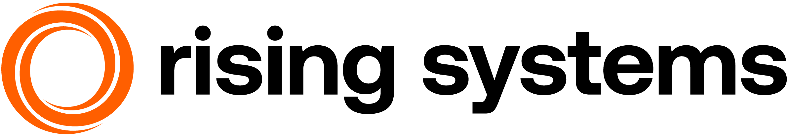

<div class="container">
    <div class="row py-3 my-5">
        <!-- START Main Content Column-->
        <div class="col px-2 rounded-3 my-5 mx-4 bg-white shadow-lg">
            <div class="row">
                <!-- Sidepanel Spacer left -->
                <div class="col-md-1 .d-none .d-sm-block">
                </div>
                <!-- START Content Column-->
                <div class="col-xs-12 col-md-10 mb-7">
                    <!--START rsag logo row-->
                    <div class="row my-5 px-5 py-3 border border-2 rs-margin-y_s border-light rounded-pill">
                        <div class="col-sm-4 my-2" style="height: 5vh;">
                            <a href="https://www.rising-systems.de"></a>
                        </div>
                        <div class="col-sm-8 d-flex flex-wrap justify-content-evenly my-2">
                            
                        </div>
                    </div>
                    <div class="row mt-7 mb-4">
                        <div class="" style="font-family:'Tahoma'">
                            <p class="fs-5">
                                    <h2>RS Location Manager</h2>
                                    <div>The <b>RS Location Manager</b> is the lightweight way to organize locations in Odoo with a clear, hierarchical structure.</div>
                                    <div>Model parent-child relationships, get quick insights in Kanban and List views, and keep everything documented via Chatter for full transparency.</div>
                            </p>
                        </div>    
                    </div>
                </div>
                <!-- Sidepanel Spacer right -->
                <div class="col-md-1 .d-none .d-sm-block">
                </div>  
            </div>
        </div>
    </div>
</div>    
